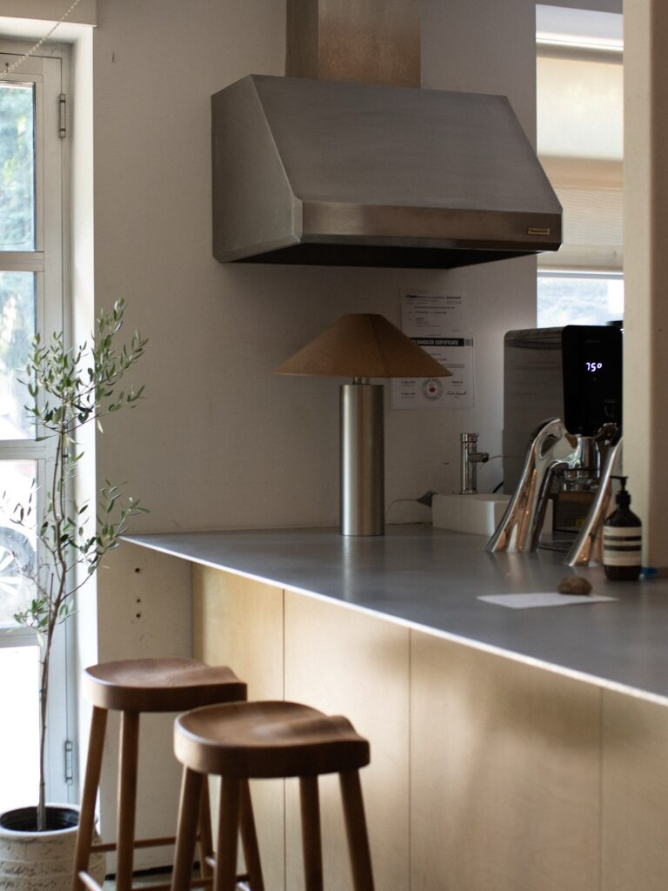
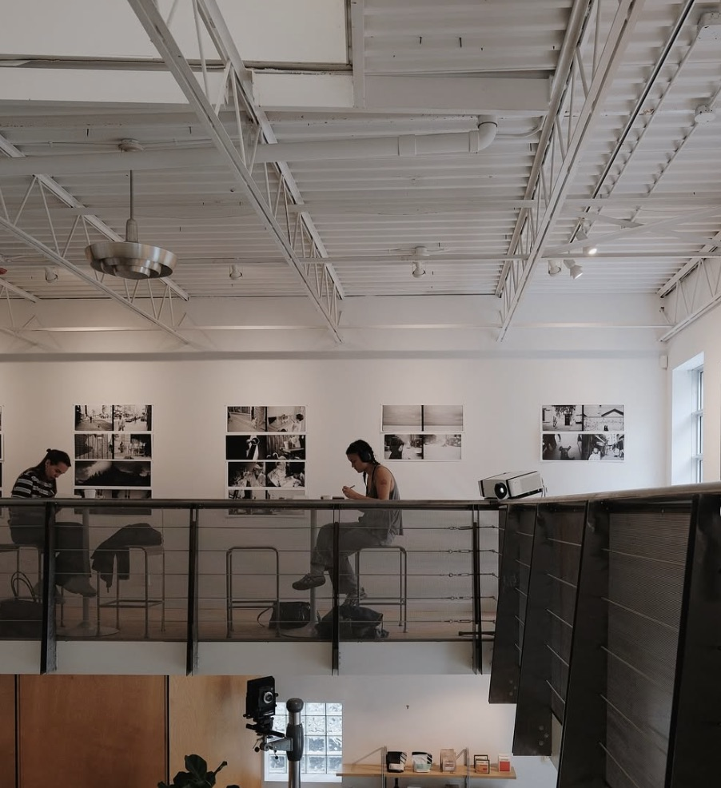
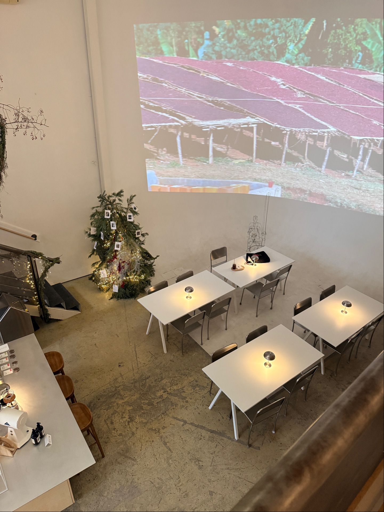
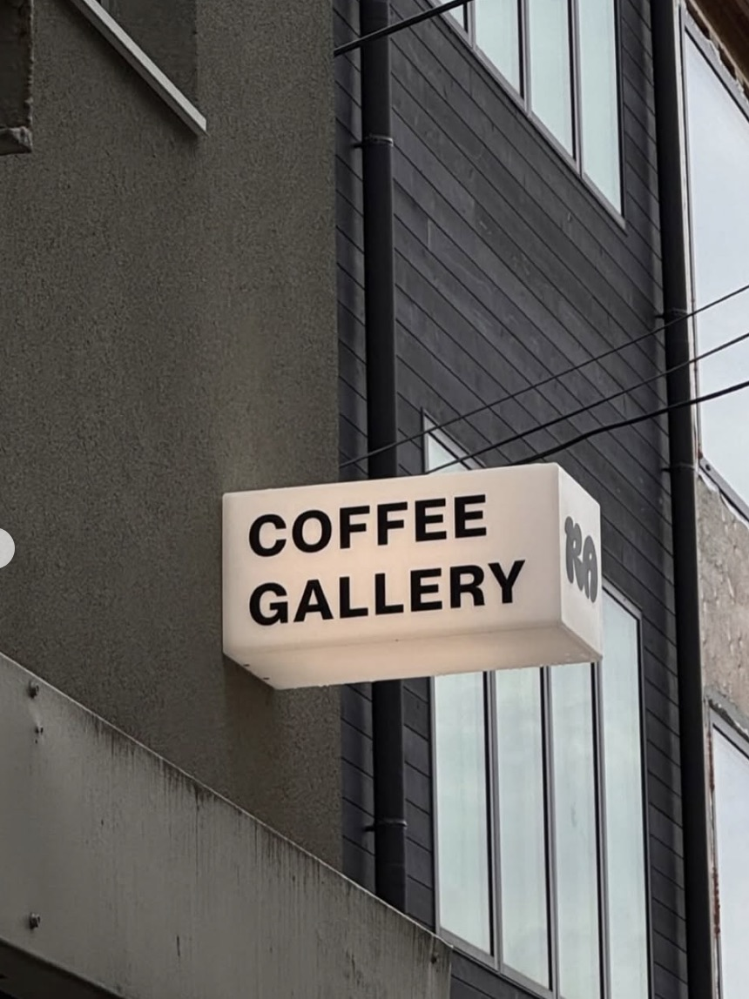

Overview
Ratelier is a unique café in downtown Toronto that blends coffee, art, and fragrance into one space. Along with serving high-quality drinks, it also features a perfume-making station, making it stand out from typical cafés. Despite this creative concept, the space still maintains a calm and minimalist atmosphere, making it a great option for studying or working in a quieter environment.
Address
9 Trinity Park Ln, Toronto, ON M6K 0E6
Hours
Monday-Friday: 8am-6pm, Saturday: 9am-6pm, Sunday: 10am-6pm
Outlets
Power outlets are available near select seating areas for your devices.
Wifi
Offers free Wi-Fi for customers. It is recognized as a cozy, often 24-hour, coffee shop spot in Toronto known for having stable internet access.

Seatings
Ratelier is designed more for individual or small group rather than large groups. The seating is simple and functional, supporting a long study sessions.

Counter Seating
Ideal for solo studying.

Small Tables
Designed more for individuals/duo studying rather than groups.

Large Table
Limited group seating for studying or perfume making.
Food & Drinks

Info
Ratelier offers a simple but well-curated menu focused on quality. The menu is minimal, but it provides everything needed for a relaxed and focused study session.
- Coffee and espresso-based drinks (lattes, cappuccinos, americanos)
- Specialty drinks crafted with attention to detail
- Light pastries and desserts
Atmosphere
Ambiance
Ratelier combines a minimalist café design with an artistic and sensory experience. This mix of coffee and fragrance creates a calm but interesting environment that feels different from more typical cafés. The cafe is described as a popular, cozy coffee shop.
- Clean, modern interior with neutral tones
- Open, uncluttered layout
- Unique addition of a perfume-making station
- Creative and slightly experimental atmosphere
Quietness
Even with its creative concept, the space remains calm and suitable for concentration.
- Generally quiet and peaceful
- Not as crowded or busy as more popular café
- Ideal for focused studying or working
Music
The subtle background music helps maintain a quiet and relaxed environment.
- Very low or barely noticeable
- Does not distract from studying
Personal Comment
Ratelier is a great choice for focused studying and working alone. The calm atmosphere and not a lot of distractions make it easy to concentrate, while the added perfume-making concept gives the space a unique and creative edge. It’s one of the more reliable spots for a quiet and productive study session, especially if you prefer a less crowded environment. It allow people to come and study for a long time. It's a good environment for people who wants to focus and study and not get distracted where it's not that loud.